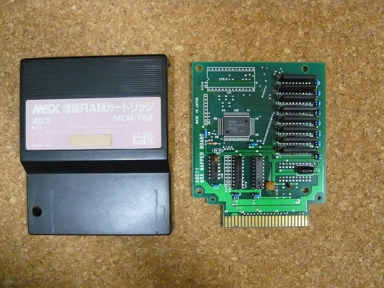
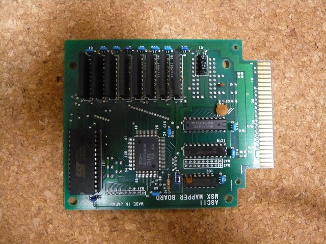
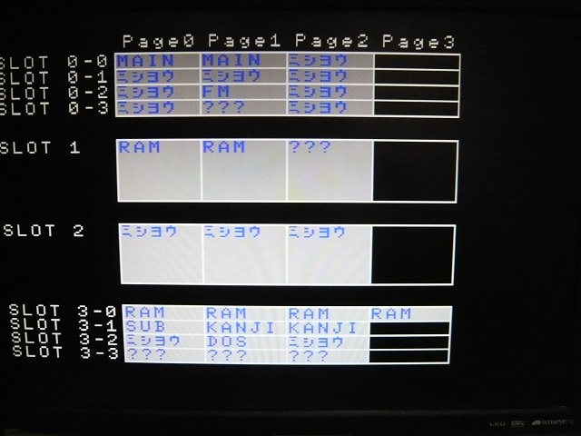
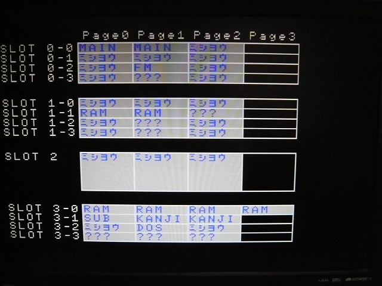
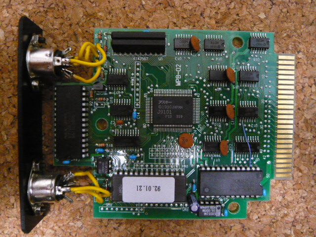
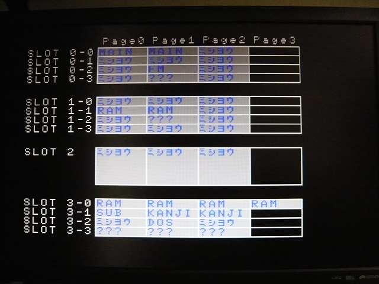
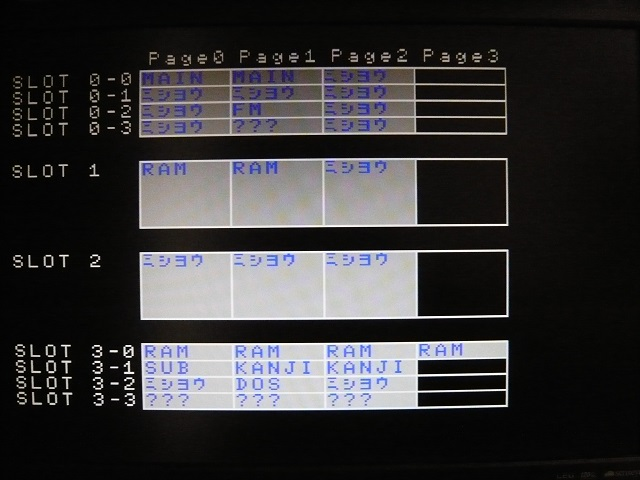

メモリマッパの秘密１
メモリマッパを搭載している外付けカートリッジとしてはMEM768とμPACKが有名です。MEM768は単なるメモリカートリッジですが、μPACKはMSX-MIDIとメモリマッパを搭載しており、一見全然違うものなのですが、実は意外と似ていたりします。
MEM768の基板はこんな感じです。

元々メモリを増設できるパターンがあり、持ち主によってすでに256kB増設されて1024kBになっています。また、左上にROMを載せるスペースがあります。他のサイトでも紹介されていますが、ここにMSX-DOS2のROMを載せることにより、メモリ−付きMSX-DOS2カートリッジ相当になります。

元々のSLOT構成はこんな感じでSLOT1にメモリが見えています。

MSX-DOS2のROMを載せ、JP1をショートするとこんな感じでスロットが拡張されます。メモリはスロット1-1になり、DOS2がスロット1-2になっているようです。スロット1-3にも何か見えますが、恐らくMSX-DOS2のROMの後半か何かなのでしょう。

メモリを1024kB化している為か単に古いためか、動作が安定せず、これ以上はチェック出来ませんでした。
一方、μPACKですが、これはこれでくせ者です。MEM768と同じくアスキーのロゴの入ったJ9101というコントローラーを搭載しています。

これも有名な話ですが、μPACKにはパスコンが少ないのです。ICが20個ほどあるのにパスコンはたったの5個しかありません。写真の茶色のコンデンサが元々載っていたものです。最低でもIC2個に付き1個を付けたいところで、パターンはありますので9個は追加で載せられます。写真の青色のコンデンサが私が追加したものです。
同じJ9101を使っていると言うことで、細かく見てみると同じくJP1というジャンパがありました。表側からは分かりませんが、裏側ではショートされています。それを外すと、MEM768のようになります。
元々のSLOT構成はこんな感じでSLOT1-1にメモリが見え、スロット1-2にMSX-MIDIが見えています。

ショートしているJP1をカットするとこんな感じでSLOT1にメモリが見え、MSX-MIDIは消えてしまいます。

もう少しJ9101を解析してメモリ増設とか出来れば良いのですが、今回はここまで。